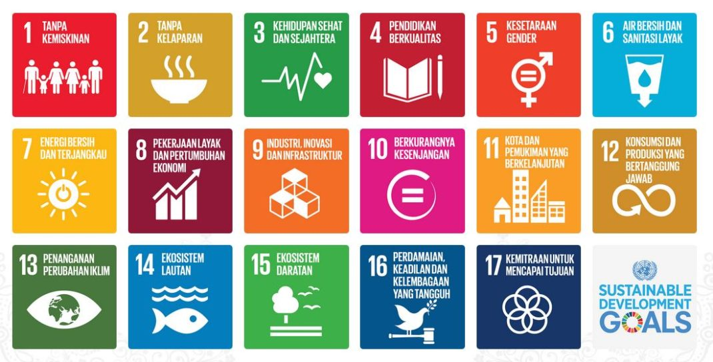

Transformasi Peternakan Domba dengan Inovasi & Keberlanjutan
Memberdayakan petani kecil, menurunkan emisi, dan menciptakan nilai dari hulu ke hilir.
Tentang Kami
Didirikan pada tahun 2024, PT Mitra Ternak Berkelanjutan adalah perusahaan agribisnis yang berorientasi pada misi membangun ekosistem peternakan domba yang modern, inklusif, dan berkelanjutan di Indonesia. Visi kami adalah membentuk model peternakan terintegrasi dan tahan iklim yang dapat berkontribusi terhadap ketahanan pangan nasional, mengurangi beban pada sistem petani kecil tradisional, serta mendorong keberlanjutan lingkungan.
Misi kami adalah memberdayakan petani kecil dan generasi muda melalui inovasi, teknologi, dan kemitraan di seluruh rantai nilai peternakan mulai dari pembibitan, pakan, pengelolaan limbah, hingga hilirisasi produk. Dengan menggabungkan kearifan lokal dan praktik modern, kami bertujuan meningkatkan kesejahteraan petani, menjamin kesejahteraan hewan, dan mengurangi dampak lingkungan.
Hulu: Pembibitan & Kemitraan
Kami menyediakan akses ke bibit domba unggul, menerapkan model kemitraan ternak yang transparan, dan memberikan pendampingan teknis kepada mitra peternak. Sistem pendampingan lapangan kami memastikan peternak menerapkan praktik budidaya yang baik dan memperoleh manfaat dari sistem pelaporan serta pembagian hasil yang terstruktur.
Penghubung: Pakan & Kesejahteraan Hewan
Program inovasi pakan kami memanfaatkan limbah pertanian lokal seperti batang jagung dan hijauan untuk memproduksi silase. Ini meningkatkan ketersediaan pakan sepanjang tahun, menekan biaya, dan berkontribusi pada penurunan emisi metana sebesar 27%. Kami juga menggunakan perlakuan probiotik alami untuk meningkatkan kesehatan ternak dan mengurangi ketergantungan pada bahan kimia.
Hilir: Pemasaran & Inovasi Produk
Strategi hilir kami difokuskan pada penguatan akses pasar melalui dua merek layanan utama: Mitra Bhakti Aqiqah, yang menyediakan daging domba higienis dan dapat dilacak untuk kebutuhan ibadah aqiqah; dan Bisa Qurban, layanan musiman yang memungkinkan pelaksanaan kurban secara etis dan transparan selama Idul Adha. Kedua platform ini mendukung peningkatan pendapatan petani kecil sekaligus mempromosikan praktik peternakan yang berkelanjutan.
Nilai Tambah: Pengelolaan Limbah
Kami mengelola limbah ternak bukan sebagai beban, tetapi sebagai sumber daya. Melalui proses fermentasi, pengeringan, dan pemadatan, kami mengubah kotoran domba menjadi dua produk bernilai tinggi: pupuk organik yang menyuburkan tanah tanpa bahan kimia sintetis, dan briket kotoran yang menjadi bahan bakar ramah lingkungan untuk rumah tangga pedesaan dan industri kecil. Model pengelolaan limbah terintegrasi ini mendukung pertanian sirkular, mengurangi pencemaran lingkungan, dan menciptakan pendapatan tambahan bagi petani.
Dampak Kami Hingga 2030
27%
Penurunan emisi metana sebesar 27% melalui sistem pakan berbasis silase dan konsentrat
35%
Peningkatan produktivitas domba sebesar 35% melalui nutrisi dan perawatan yang lebih baik
100%
100% kotoran domba didaur ulang menjadi produk organik bernilai
40%
Pengurangan biaya pakan hingga 40% melalui pemanfaatan limbah pertanian
>5.000
Lebih dari 5.000 petani kecil terlibat dalam praktik peternakan berkelanjutan

Kami menyelaraskan praktik bisnis kami dengan Tujuan Pembangunan Berkelanjutan (SDGs) PBB, khususnya yang berkaitan dengan:
Produksi dan konsumsi yang bertanggung jawab
Aksi iklim melalui pengurangan emisi
Penghidupan pedesaan yang berkelanjutan
Pemberdayaan petani kecil dan pemuda dalam agribisnis
Ekonomi sirkular dan pertanian regeneratif
Produk Kami
Kami merasa terhormat telah mendapatkan perhatian dari media lokal dan nasional yang mengapresiasi inovasi dan dampak kami dalam peternakan berkelanjutan:

BeritaJatim – Mitra Ternak Farm: Program Titip Domba Tuban
beritajatim.com
Tuban (beritajatim.com) – Peternakan domba milenial Mitra Ternak Farm yang berlokasi di Desa Ngrayung, Kecamatan Plumpang, Kabupaten Tuban, mencuri perhatian berkat ...
selengkapnya

iNews Tuban – Sistem Breeding Banjir Pesanan Kurban
tuban.inews.id
TUBAN, iNewsTuban.id - Mnjelang hari raya Idul Adha, berkah penjualan hewan kurban mulai dirasakan para peternak. Di Kabupaten Tuban, Jawa Timur, sebuah peternakan domba justru ...
selengkapnya
Hubungi Kami
Mari bersama membangun masa depan peternakan yang berkelanjutan dan inklusif.
WhatsApp:
+6285157775709
Email:
kemitraan@mitraternak.com
Lokasi:
Tuban, Jawa Timur, Indonesia, 62382